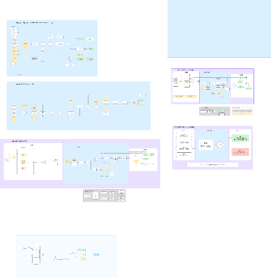

여행이 끝날 때까지,
계획을 지키는 guguroute
내 계획을 올리면
문제를 살피고, 대안을 적용하고, 알려 줍니다
현장에서 다시 계획하는 여행자
기획 페르소나
첫 서울 여행의
대만인 여성 친구 2명
한국어를 못하고
맛집·쇼핑 앱을 번갈아 씁니다
2025년 방한객
현지에서 정보 재검색
현지에서 일정 변경
일본 여행, 1시 식당이 임시휴무
3시 체험 예약까지 지켜야 합니다
문제 발견 · 검색 · 번역 · 영업 확인 · 대안 탐색
이동 재계산 · 예약 충돌 확인 · 일정 수정 · 공유
근거: facts.md §1 · 야놀자리서치 / 중간발표 자료 · 소요 시간 수치는 제공 자료에 없음
알림·설계 서비스와 여행 중 관리
| 서비스 | 확인한 역할 | 확인하지 못한 범위 |
|---|---|---|
| TripIt Pro | 항공 지연 알림 · 대체 항공편 | 지연이 식당·활동에 주는 영향 검증 |
| TripMazer | 날씨·파업·지연 감시 · 재계획 | AI 일정 제안은 약관상 추정치 |
| Tripsy | 일정 편집 연동 | 감지·영향 분석·검증 반복 |
| 토모트래블 사람 상담 | 상담 29,000원 · 설계 249,000원 | 여행 중 실시간 감시 |
| guguroute | 기존 계획 감시 · 대안 · 이동 재검증 | 서울 범위 · 실시간 웨이팅 API 없음 |
guguroute의 비교 기준은 변경 후에도 다음 일정이 성립하는가입니다
facts.md §2 · 공개 자료·팀 직접 시험에서 확인한 범위 · 동등한 서울 인바운드 유료 관리 상품은 미확보
웹에 들어와 내 계획을 올립니다
휴대폰 브라우저 진입
언어 선택
내 여행 열기
로그인 없이 시작합니다
취향·변경 권한 선택
글 또는 파일 올리기
읽은 항목을 고친 뒤
「등록하고 관리 시작」
사진 · PDF · 워드 · 엑셀, 최대 5개


실제 캡처 s1·s2 · 경로: / → /start → /trips/new → 읽기 확인 → 여행 관리
변경안과 최신 일정을 함께 봅니다
문제가 생긴 뒤
먼저 바꾼 안
다른 안 3개
다른 곳을 고르거나
「지금 일정 그대로 두기」
일차별 일정 확인
지도 앱에서 길찾기
답이 없으면 지금대로 둡니다
「먼저 물어봐」 여행은 승인 요청


실제 캡처 s3·s4 · /trips/… · 사전에 정한 자동 변경 허용 범위 적용
알림에서 지도·채팅으로 이어집니다
출발 시각 알림
하루 시작 · 다음 일정
이동 시작을 알려 줍니다
지도에서 위치 확인
채팅에서 일정 질문
하루 요약과 다음 이동 확인
여행계획서 링크는
항상 최신 일정을 보여 줍니다


실제 캡처 s5·s6·s7 · 현재 외부 알림 채널: 디스코드 · 계획서 링크는 로그인 없이 열림
LLM의 답변과 에이전트의 실행
LLM 호출
물어보면 한 번 답합니다
답변 후 끝
스스로 시각·결과를 확인하지 않음
guguroute 에이전트
상황이 바뀌면 일을 시작합니다
할 일 정하기 · 조회 · 결과 모으기 · 따져 보기
결론과 근거를 남기고, 알리고, 답을 기다림
시간·영업 여부는 코드가 판정
LLM은 원문 가리키기·분류·설명에 사용
에이전트가 함께 계획을 지키는 흐름

공통 플로우를 발표용으로 재구성
여행 매니저가 일감을 나누고, 변경의 연쇄 영향을 다시 확인합니다
facts.md §4 · figma_agent_flow_text.md 공통 플로우 · 웨이팅 감지는 현재 미구현
계획 읽기: 원문을 확인하는 접수 담당
사람이라면, 받은 계획서를 한 줄씩 확인하고 빠진 내용을 되묻는 일
판단 경계
LLM은 원문 위치를 가리킵니다
원문에 없는 인용은 버림
장소를 확인한 뒤 사용자에게 검토 요청
항목 재현율
326 / 336 · 합성 평가 60건값 변조율
12 / 350 · 목표 0 미달facts.md §6 계획 읽기 · 규칙 + 원문 근거 · 등록 전 사용자 확인
요식: 식사 시간을 지키는 예약 담당
사람이라면, 도착 시각에 식사할 수 있는지 확인하고 대안을 찾는 일
점심 70분 지연
브레이크타임에 걸림
도보 6분 식당 제안
앞뒤 이동은 매니저를 거쳐 재검증
영업시간 사람 대조 일치
서울 식당 1,225곳실시간 웨이팅 API 없음
낮 임시휴무는 현재 고객 신고로 보완
facts.md §6 요식 · 라스트오더·식단·아이 동반도 점검 · 대체 후보는 덜 밀리는 / 비슷한 / 가까운 축
액티비티: 하루 경험을 지키는 현지 가이드
사람이라면, 날씨와 운영 조건을 보고 같은 여행 목적의 대안을 찾는 일
잠실 스카이타워 전망
미세먼지·소나기 경보
실내 아쿠아리움으로 대안 검토
예약 시각과 앞뒤 이동도 확인
피그마의 대체 우선순위
활동 대분류를 유지
1순위 소분류만 변경
2순위 중분류까지 변경
3순위 다른 구로 확장
facts.md §6 액티비티 · figma_agent_flow_text.md 대체 우선순위 · 서울 후보 805행
이동: 모두가 쓰는 시간표 확인 담당
사람이라면, 바뀐 장소까지 가도 다음 예약에 맞는지 계산하는 일
판정 대상 시간표 행
회귀 판정 일치
확정 · 추정 · 근거 없음
모든 답에 근거 등급과 확인 시각
못 맞추면 다른 경로·시간 조정
매니저가 호출하는 공용 판정기
택시·실시간 도착 정보는 향후 편입
facts.md §6 이동 · figma_agent_flow_text.md 발표용 이동 판정기 · 에이전트끼리 직접 호출하지 않음
시스템은 한 계획을 함께 관리합니다
모든 변경은 새 일정 판으로 남깁니다 · 판정 실패·대기 만료는 사람에게 넘깁니다
facts.md §4·7 · 여행자 접점 / 매니저와 담당 에이전트 / 정보와 여행 기록
같은 평가셋으로 개선을 확인했습니다
계획 읽기 · 합성 60건
항목 재현율 326 / 336
요식 · 사람 대조 100곳
영업시간 일치 99 / 100
이동 · 회귀 판정
168 / 168판정 어긋남 0
추천 품질은 아직 사람 검증이 필요합니다
분류 일치@3 0.767 → 0.915 157 / 173 · 1회 시험 · 대리 지표 · 제품 미적용
사람 판정 시트 237행 작성 중 · 자체 분류 모델도 제품 미연결
facts.md §6·9 · 합성 평가·회귀 판정 결과 · 실제 여행 만족도는 미측정
사진 계획의 누락을 줄인 방법
이전 방식
사진을 한 번에
일정으로 변환
3 / 6일차 통째 누락
원문에 없는 칸 추가
바꾼 방식
한 줄씩 받아쓰기
규칙으로 항목 추출
6 / 6해당 사례의 항목을 모두 읽음
해당 사례에서 값 변조 없음
긴 가게 이름 오독이 남았습니다
두 번 읽은 결과가 다른 줄은 「확인 필요」로 표시
facts.md §10 · 6개 항목 사례와 전체 평가 지표를 구분 · 목표 0 미달
변경은 develop과 main 관문을 거칩니다
develop 통과
09-24main 통과
09-24전체 시험 통과
09-28 · 60건 건너뜀이동 팀 PR 2건을 develop에 병합 · 실제 시간표 시험 399 / 399
facts.md §8 · 전체 시험에서 live 제외 · 빌드한 이미지는 자동으로 올리지 않음
웹도 검증하지만 자동 배포는 빌드까지입니다
웹 폴더가 바뀔 때
지금의 운영
한 대의 PC에 앱·데이터 상주
감시 작업은 1분마다 실행
상시 운영을 약속할 때 서버 이전
자동화 경계
검증 + 빌드 완료
자동 업로드·운영 배포는 아직 없음
같은 알림 중복
유일 키 조건보낼 함에 저장한 뒤 전송
3회 재시도 후 실패 보관
facts.md §4·8 · 웹 관문: Playwright E2E · 현재 자동화는 검증·빌드 범위
다음 검증은 에이전트의 현장 판단입니다
요식 · 액티비티
낮 임시휴무 자동 탐지 · 추천 적합도 사람 평가
날씨·대기질 조건 확대
이동 · 코어
실시간 도착 정보 · 택시 편입
사람 정답으로 계획 읽기·분류 평가, 자체 모델 연결 검토
서울에서 검증한 뒤, 다른 도시로
현재 한계: 웨이팅 API 없음 · 값 변조 3.4% · 자체 분류 모델 미연결
여행 중 바뀐 계획을 끝까지 확인하겠습니다facts.md §11 · 범위 확대보다 현장 판단과 추천 품질 검증을 먼저